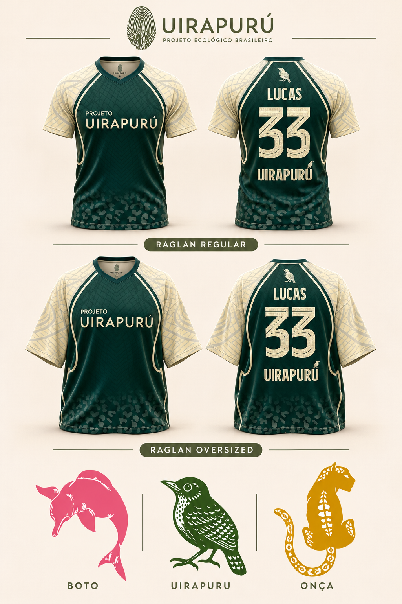

ROSA DOS RIOS
Boto
Camisa raglan + ecobag · Estudo da coleção
CRIADO POR DESIGNERS. INSPIRADO NA FLORESTA.
Grafismos que contam histórias. Formas que carregam a floresta. Conheça o universo do Projeto Uirapurú.
Explore a coleção ↗EXPRESSÕES DA FLORESTA
Camisa e ecobag em sintonia.
Explore os conjuntos pelas setas.
ROSA DOS RIOS
Camisa raglan + ecobag · Estudo da coleção
VERDE DA FLORESTA
Camisa raglan + ecobag · Estudo da coleção
AMARELO E OURO
Camisa raglan + ecobag · Estudo da coleção
TRÊS ANIMAIS. TRÊS EXPRESSÕES.
Cada animal, sua camisa e sua ecobag.
Em breve, mais uma forma de levar a Amazônia com você.
NOSSA ORIGEM
Somos um grupo de designers gráficos reunidos em um projeto ecológico. Usamos o design para expressar nossa conexão com a Amazônia e transformar referências da região em peças para o cotidiano.
O boto, o uirapuru e a onça fazem parte desse universo visual. Cada animal tem sua cor, sua presença e seu lugar na coleção.
DO MOLDE À IDEIA
Estudo visual dos modelos e grafismos.
As peças finais podem apresentar ajustes.

VAMOS CONVERSAR?
Os pedidos serão atendidos pelo WhatsApp.
Nosso canal de atendimento estará disponível em breve.